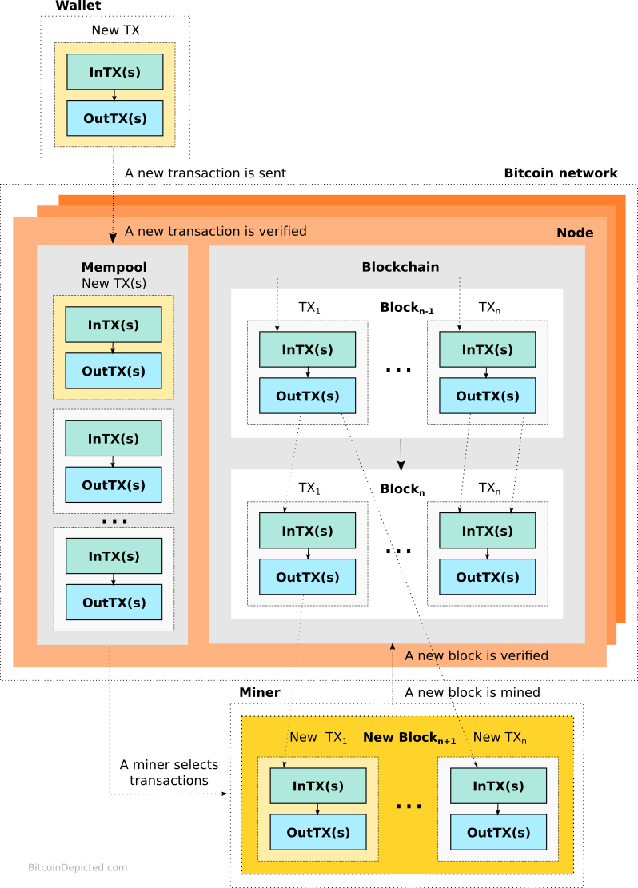

The Bitcoin protocol illustrated / About
High level overview of the Bitcoin network
What is Bitcoin
Bitcoin is simply a unit of account that is used to express a reward that is granted to a miner that successfully mines a block consisting of a number of transactions.
Transaction
A Bitcoin transaction (TX) is composed by a wallet and includes a set of inputs (InTX) and outputs (OutTX). The inputs and outputs are linked to Bitcoin addresses. The transaction specifies the amount of Bitcoin sent from the input to output addresses. Each Bitcoin address is derived from a public key corresponding with a unique private key.
A new transaction is sent to the Bitcoin network consisting of nodes. It is verified by the nodes and stored in the mempool where it awaits to be selected by a miner and included into a new block. The block, if successfully mined and verified by the nodes, gets included into the blockchain. Once included, the transfer of Bitcoin specified by the transactions included into the block is considered final and can not be reverted.
Bitcoin ownership
The ownership of Bitcoins is proven by executing a script (a set of instructions) protecting all inputs and outputs of a transaction. The execution of the script, in typical scenario, boils down to verification of a signature created using the private key corresponding with each of the addresses involved in the transaction. This means that ownership of the private key is equal to the ownership of Bitcoin transferred to the address and therefore a proper generation and protection of the private key is essential.